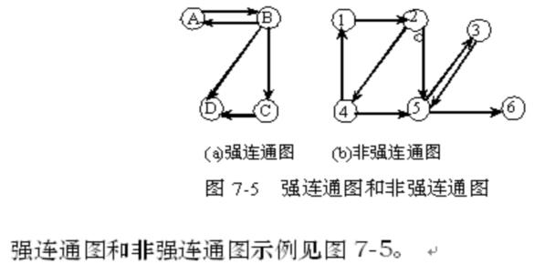

|
|
第七章 图
§7.1 图的定义和术语
一、▲：图的定义
图是由顶点集V和顶点间的关系集合E（边的集合）组成的一种数据结构，可以用二元组定义为：G=（V,E）。
例如，对于图7-1所示的无向图G1和有向图G2，它们的数据结构
可以描述为：G1=(V1,E1), 其中 V1={a,b,c,d},E1={(a,b),(a,c),(a,d),(b,d),(c,d)},而G2=(V2,E2)，其中V2={1,2,3}, E2={<1,2>,<1,3>,<2,3>,<3,1>}。
二、图的基本术语
1. ▲：有向图和无向图
在图中，若用箭头标明了边是有方向性的，则称这样的图为有向图，否则称为无向图。如图7-1中，G1为无向图，G2为有向图。
在无向图中，一条边（x,y）与（y,x）表示的结果相同，用圆括号表示，在有向图中，一条边<x,y>与<y,x>表示的结果不相同，故用尖括号表示。〈x,y>表示从顶点x发向顶点y的边，x为始点，y为终点。有向边也称为弧，x为弧尾，y为弧头,则<x,y>表示为一条弧,而<y,x>表示y为弧尾，x为弧头的另一条弧 。
2.▲：完全图、稠密图、稀疏图
具有n个顶点，n(n-1)/2条边的图，称为完全无向图，具有n个顶点，n(n-1) 条弧的有向图,称为完全有向图。完全无向图和完全有向图都称为完全图。
对于一般无向图，顶点数为n，边数为e，则 0≤e ≤n(n-1)/2。
对于一般有向图，顶点数为n，弧数为e， 则 0≤e≤n(n-1) 。
当一个图接近完全图时，则称它为稠密图，相反地，当一个图中含有较少的边或弧时，则称它为稀疏图。
3.▲：度、入度、出度
在图中，对于无向图G=（V，{E}），如果边（v,v’）∈E，则称顶点v和v’互为邻接点，即v和v’相邻。边（v,v’）依附于顶点v和v’，或者说（v,v’）和顶点v和v’相关联。一个顶点依附的边或弧的数目，称为该顶点的度，记为TD（v）。
在有向图G=（V，{A}）中，如果弧< v,v’>∈A，则称顶点v邻接到顶点v’，顶点v’邻接自顶点v。弧〈v,v’〉和顶点v和v’相关联。一个顶点依附的弧头数目，称为该顶点的入度。记为ID（v）；一个顶点依附的弧尾数目，称为该顶点的出度，记为OD（v）；某个顶点的入度和出度之和称为该顶点的度，记为TD（v）。
一般地，如果顶点vi的度记为TD（vi），那么一个有n个顶点，e条边或弧的图，满足如下关系
4.▲：子图
若有两个图G1和G2， G1=(V1,E1)， G2=(V2,E2)， 满足如下条件： V2íV1 ，E2í E1，即V2为V1的子集，E2为E1的子集，称图G2为图G1的子图。
图和子图的示例具体见图
5．▲：权
在图的边或弧中给出相关的数，称为权。 权可以代表一个顶点到另一个顶点的距离，耗费等，带权图一般称为网。
6．▲：连通图和强连通图
在无向图中，若从顶点i到顶点j有路径，则称顶点i和顶点j是连通的。若任意两个顶点都是连通的，则称此无向图为连通图，否则称为非连通图。
在有向图中，若从顶点i到顶点j有路径，则称从顶点i和顶点j是连通的，若图中任意两个顶点都是连通的，则称此有向图为强连通图，否则称为非强连通图。
强连通图和非强连通图示例见下图

7．▲：连通分量和强连通分量
无向图中，极大的连通子图为该图的连通分量。显然，任何连通图的连通分量只有一个，即它本身，而非连通图有多个连通分量。
有向图中，极大的强连通子图为该 图的强连通分量。显然，任何强连通图的强连通分量只有一个，即它本身，而非强连通图有多个强连通分量。
8．▲：路径、回路
在无向图G中，若存在一个顶点序列Vp ,Vi1，Vi2，…，Vin，Vq, 使得（Vp,Vi1）,(Vi1,Vi2),…..，(Vin,Vq)均属于E（G），则称顶点Vp到Vq存在一条路径。若一条路径上除起点和终点可以相同外，其余顶点均不相同，则称此路径为简单路径。起点和终点相同的路径称为回路，简单路径组成的回路称为简单回路。路径上经过的边或弧的数目称为该路径的路径长度。
9．▲：有根图 v在一个有向图中，若从顶点V有路径可以到达图中的其它所有顶点，则称此有向图为有根图，顶点V称作图的根。即顶点V的入度为0，其余顶点的入度均为1。
10．▲：生成树、生成森林
连通图的生成树是一个极小连通子图，它包含图中全部n个顶点和n-1条不构成回路的边。非连通图的生成树则组成一个生成森林。若图中有n个顶点，m个连通分量，则生成森林中有n-m条边。
三、抽象数据类型图的定义：
ADT Graph{ v数据对象V：
数据关系R： v基本操作P：
（1） CreatGraph（G）输入图G的顶点和边，建立图G的存储。
（2） DestroyGraph（G）释放图G占用的存储空间。
（3） LocateVex（G，u）在图G中找到顶点u，返回该顶点在图中位置。
（4） GetVex（G，v）在图G中找到顶点v，并返回顶点v的相关信息。
（5） PutVex（G，v，value）在图G中找到顶点v，并将value值赋给顶点v。
（6） FirstAdjVex（G，v）在图G中，返回v的第一个邻接点。若顶点在G中没有邻接顶点，则返回“空”。
（7） NextAdjVex（G，v，w）在图G中，返回v的（相对于w的）下一个邻接顶点。若w是v的最后一个邻接点，则返回“空”。
（8） InsertVex（G，v）在图G中增添新顶点v。
（9） DeleteVex（G，v）在图G中，删除顶点v以及所有和顶点v相关联的边或弧。
（10）InsertArc（G，v，w）在图G中增添一条从顶点v到顶点w的边或弧。
（11）DeleteArc（G，v，w）在图G中删除一条从顶点v到顶点w的边或弧。
（12）DFSTraverse（G，v）在图G中，从顶点v出发深度优先遍历图G。
（13）BFSTtaverse（G，v）在图G中，从顶点v出发广度优先遍历图G。
}ADT Graph
|
|